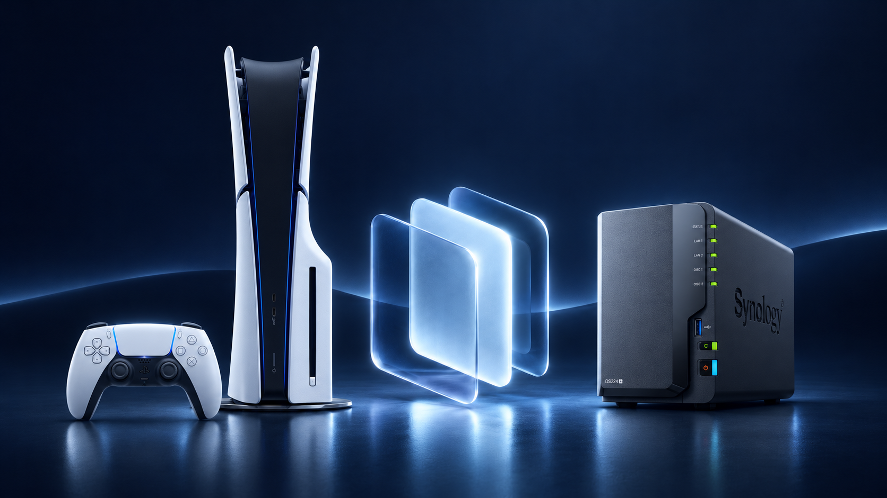
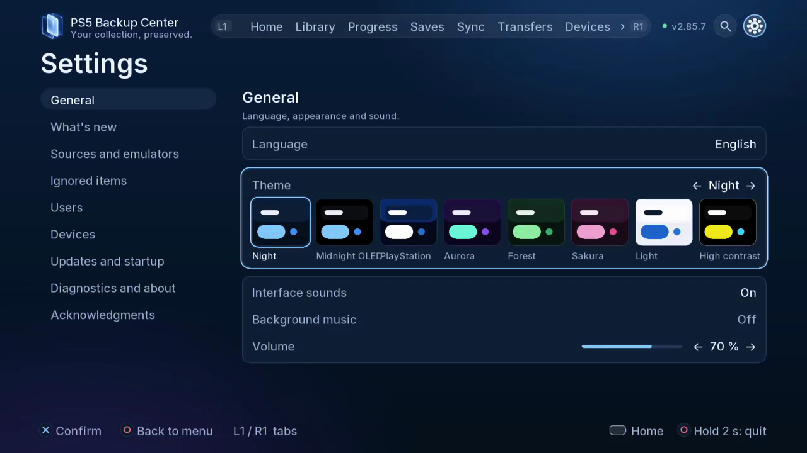

PS5 Backup Center
English
Français
Français (Canada)
Español
Español (Latinoamérica)
Português (Brasil)
Português (Portugal)
Deutsch
Italiano
Nederlands
Polski
Türkçe
Русский
简体中文
繁體中文
日本語
한국어
Tiếng Việt
العربية
Notte
Mezzanotte OLED
PlayStation
Aurora
Foresta
Sakura
Chiaro
Contrasto elevato
Scopri
Guide
GitHub
Temi
Media
Sostieni
PS5 Backup Center
Temi
Scegli una palette nel menu. La scelta rimane tra le pagine.
Prova una palette
Notte
Mezzanotte OLED
PlayStation
Aurora
Foresta
Sakura
Chiaro
Contrasto elevato
Anteprima della presentazione

Libreria
Progressi
Salvataggi
Sincro

Notte